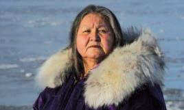

Photo: Goldman Environmental Foundation
The Inuit, inhabitants of the Arctic, know the magnificent biodiversity of the area they inhabit and are direct witnesses to the environmental damage in the region.
Caroline Cannon, a member of this community, has faced powerful companies interested in the oil wealth of the Arctic region for years.
Work alongside groups of scientists to halt the destruction of the environment they inhabit.